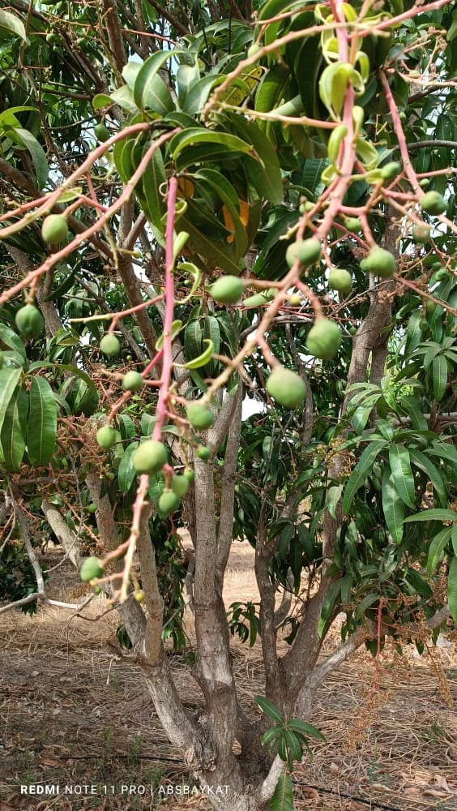

Sélectionner
Vente & distribution
Mangue Kent et productions du domaine, pour les marchés locaux et internationaux.
- Produits bruts
- Approvisionnement
- Conditionnement adapté
Depuis 1996, cultiver, transformer et exporter au cœur du Sénégal.
Nos produits


Notre maison
À Fatick, le Domaine Agricole de Néma cultive la mangue Kent et développe des activités agricoles, de transformation et d’exportation.
GLOBALG.A.P. · SMETA · Tesco Nurture · GRASP
Nos engagements qualitéVendre. Transformer. Exporter.
Sélectionner
Mangue Kent et productions du domaine, pour les marchés locaux et internationaux.
Transformer
Valoriser les récoltes au plus près de leur origine.
Exporter
Des débouchés au Sénégal, en Europe et en Afrique.
Notre sélection

Une chair douce et juteuse.

Cultiver
Maraîchage et culture du maïs, en complément de l’arboriculture.

Diversifier
Des productions animales et aquacoles au sein du domaine.

Les lignes changent.
La terre reste.
À l’international
Au Sénégal, en Europe et en Afrique : le domaine développe un réseau de distribution pour ses mangues.
Parlons exportProduit, volume, destination et calendrier.
Format, qualité et conditionnement.
Logistique et documents précisés avant confirmation.
Un interlocuteur pour chaque commande.
Notre équipe

Contact